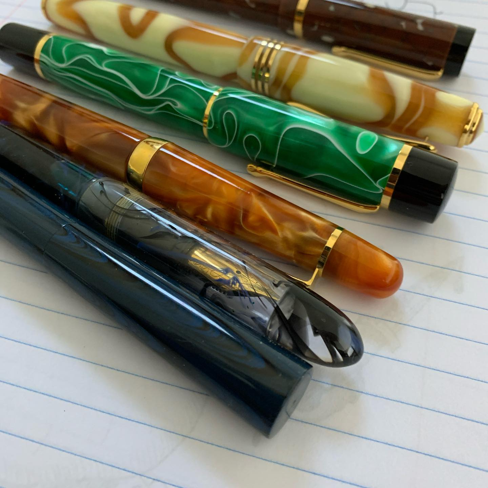
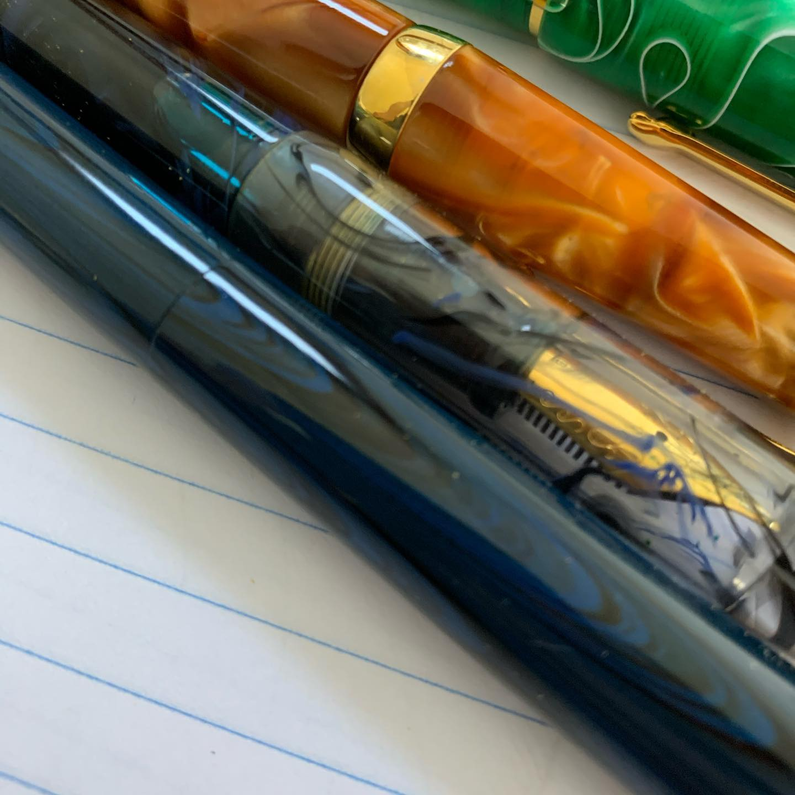
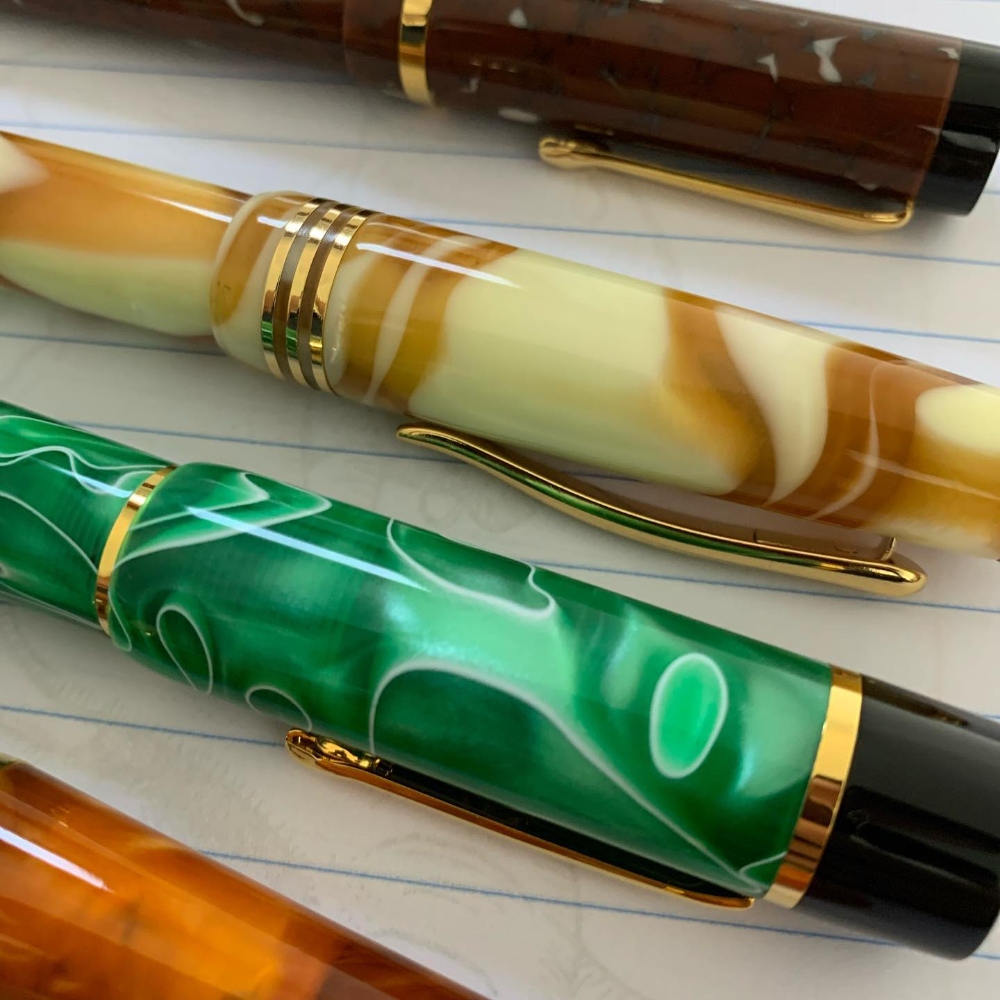
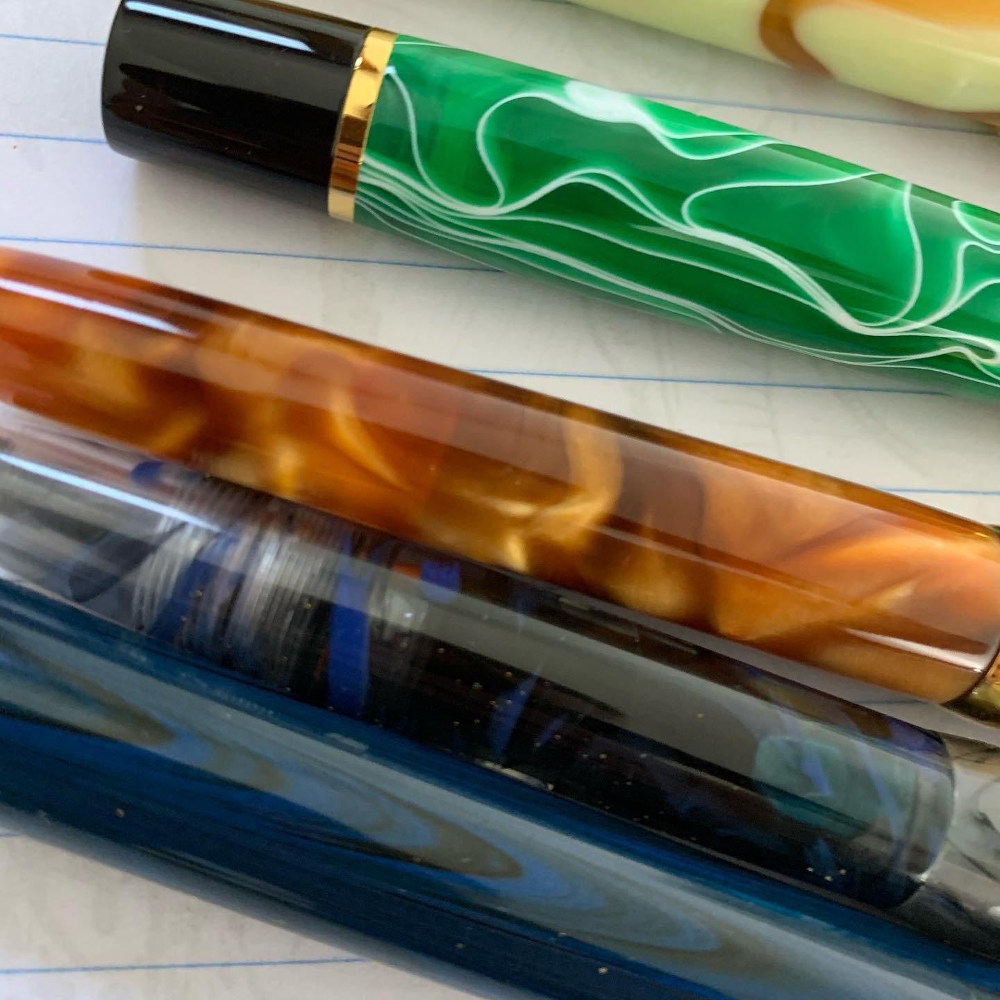
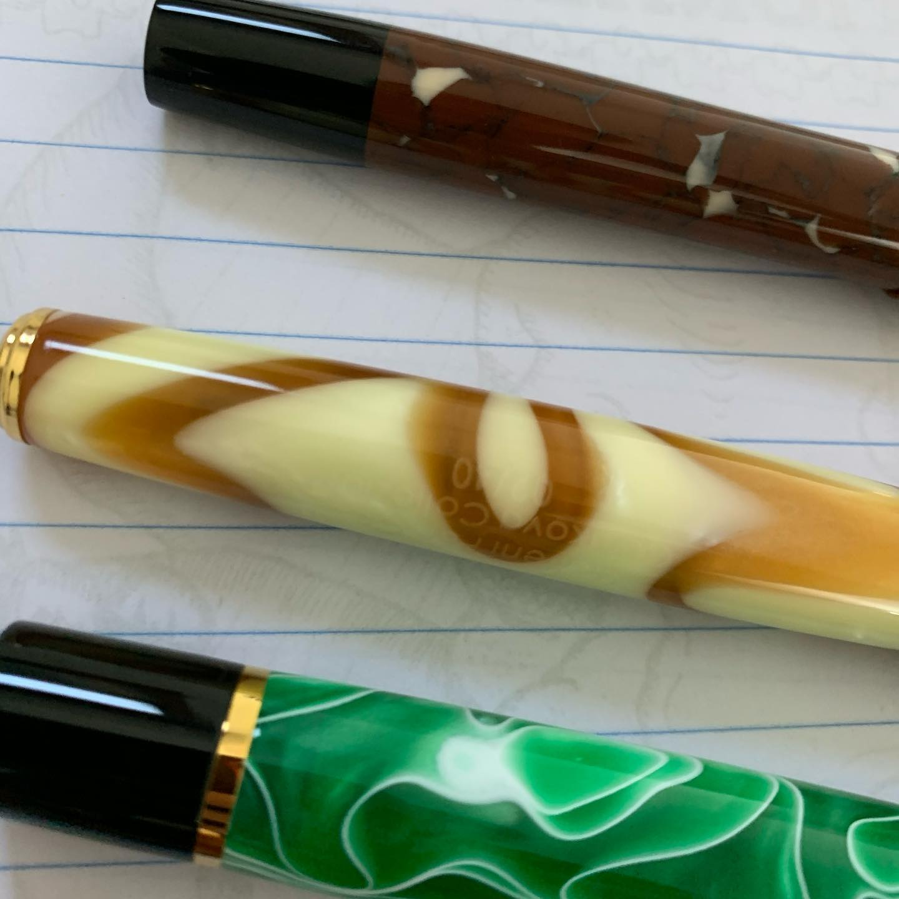
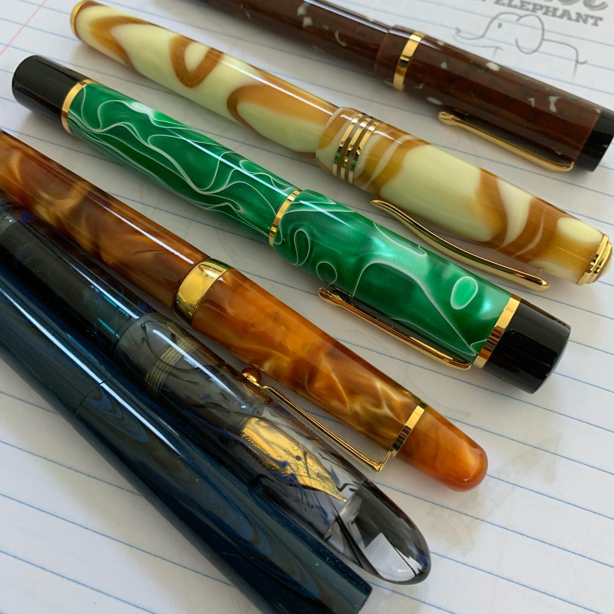

Correspondence Part 2
Relationship: Explicit satellite of Marin Brewing Co Source platform: INSTAGRAM Export Match Confidence: 0.8 (via csv_name_inference)
Caption / Correspondence Log:
If you want fountain pens I'd imagine pretty much everyone just shops local as that would make sense. I have some here that are from Ohio and it's kind of your instinct a little bit to be proud of your home state. I'm sure every state has a few of these guys, but @edisonpenco makes some ridiculously nice pens and is out of northern Ohio while Bexley is out of Bexley and just kind of antisocial and I don't think does social media. I don't know if everyone in the pen world loves Howard Levy but any time I hear him mentioned someone pipes up that he's their favorite person at pen shows. Definitely one of mine. Couple of cheaper Bexley Prometheus, a Submariner, a Molteni Curakova contract pen, an Edison Menlo Pump Filler, and an Extended Mina. Anyways, Ohio has some decent pens and I make no apologies for my terrible photos of great #fountainpens #menlopumpfiller #bexleysubmariner #bexleyprometheus #moltenifountainpen #edisonfountainpen
Artifact Scans & Drawings:






Provenance & Audit:
- Source Path:
Unknown - Original entity ID:
instagram/post-6315270792940877380